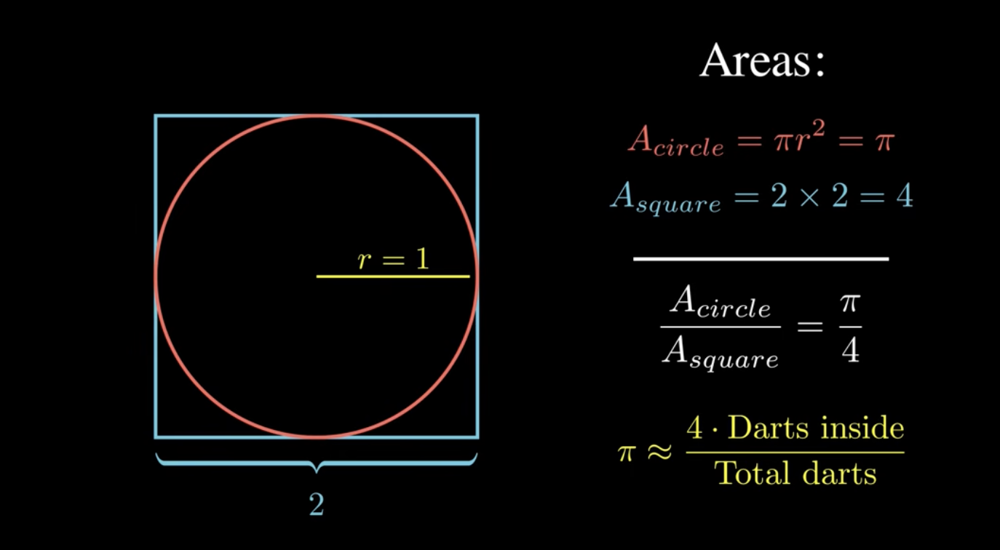
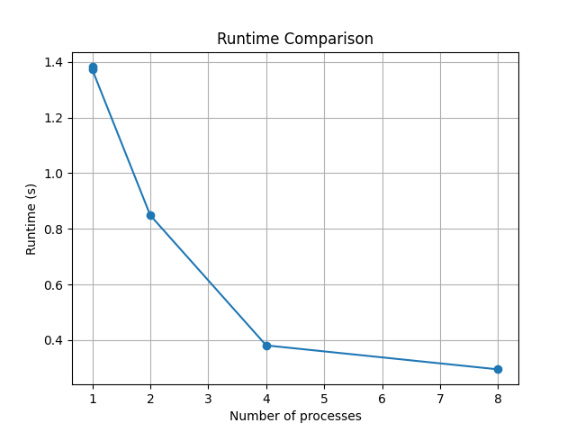
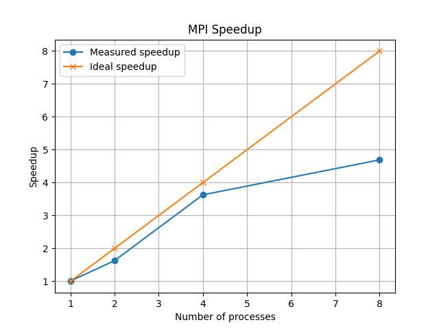
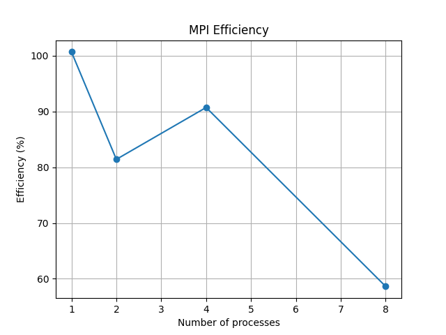

July 2025
One of the simplest ways to approximate π is the Monte Carlo method. The idea is to randomly generate points inside a square and count how many of them fall inside an inscribed circle.
This project is interesting from a High-Performance Computing perspective because each random point can be generated independently. This makes the problem embarrassingly parallel, meaning that the workload can be divided among multiple processes with very little communication overhead.
In this project, I implemented both a serial and an MPI-based parallel version in C. The goal was to compare execution times, measure scalability, and evaluate the performance benefits of parallel computation.
The Monte Carlo method estimates π using random sampling. Instead of calculating π directly through geometry, we generate a large number of random points inside a square and determine how many of them fall inside an inscribed circle.
The following diagram illustrates the underlying idea:

Figure 1: Monte Carlo approximation of π. Source: Original image
The circle has radius 1 and is enclosed by a square with side length 2. Therefore:
Area(circle) = π × 1² = π Area(square) = 2 × 2 = 4
The ratio between both areas is:
Area(circle) / Area(square) = π / 4
If random points are distributed uniformly across the square, the fraction of points that fall inside the circle approximates the same ratio:
Points inside circle / Total points ≈ π / 4
Rearranging the equation gives:
π ≈ 4 × (Points inside circle / Total points)
As the number of generated points increases, the approximation converges towards the true value of π. This makes the Monte Carlo method a simple but effective example of probabilistic numerical computation and a good candidate for parallelization.
The serial implementation generates all random points on a single process and counts how many points fall inside the circle. This version serves as the baseline for evaluating the performance of the parallel implementation.
The MPI version distributes the total number of random points across multiple processes. Each process computes its own local count of points inside the circle.
After the local computations are finished, the partial results are combined
using MPI_Reduce. The root process then computes the final
approximation of π.
Total points
|
v
+-------------------+
| Split among ranks |
+-------------------+
|
+------> Rank 0 computes local count
|
+------> Rank 1 computes local count
|
+------> Rank 2 computes local count
|
+------> Rank N computes local count
|
v
MPI_Reduce sums all local counts
|
v
Root process computes π
To evaluate the parallel implementation, I measured runtime, computation time, reduction time, approximation error, speedup, and parallel efficiency.
Speedup(p) = T_serial / T_parallel(p) Efficiency(p) = Speedup(p) / p
Here, p is the number of MPI processes.
The benchmark results were written to a CSV file and analyzed using Python. The figures below show the runtime, speedup, and efficiency of the MPI implementation for different numbers of processes.

As expected, the runtime decreases as more MPI processes participate in the computation.

The speedup approaches the ideal scaling line, demonstrating that Monte Carlo simulation is highly parallelizable.

Efficiency decreases slightly as more processes are added due to communication overhead and synchronization costs, but remains relatively high because the workload is largely independent.
MPI_ReduceMPI_WtimeMPI_Reduce